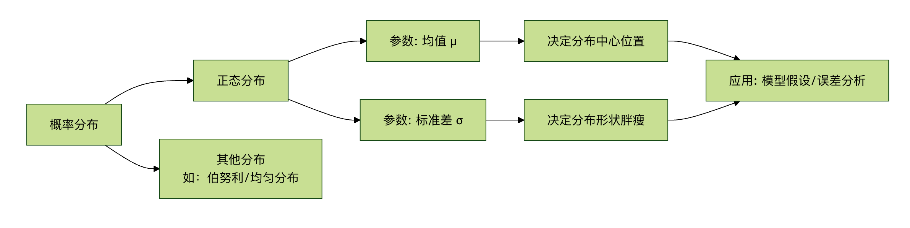

統計学基礎
さまざまなクールなアルゴリズムを学ぶ前に、極めて重要な基盤を固める必要があります——統計学。
統計学を機械学習の言語とツールボックスと想像できます。それがなければ、機械学習モデルは地図のない探検家のようなもので、データを理解したり、予測したり、自分の性能を評価したりすることができません。
この記事では、機械学習に必要な統計学の中核概念を体系的に紹介し、わかりやすい言葉と生き生きとした例を使って、しっかりした理論基盤を構築するお手伝いをします。
なぜ機械学習に統計学が必要なのか？
中核的な理由：機械学習は本質的にデータから規則性を学習する、そしてその規則性を使って未知の状況に対して予測或意思決定を行います。一方、統計学は、データを収集・分析・解釈・提示する方法を研究する科学です。
- データの理解：統計学は、データの基本的な特徴（平均身長、収入分布など）を記述するのに役立ちます。これはデータクリーニングと探索の第一歩です。
- 規則性の発見：データから普遍的な規則性（モデル）を推定する方法を提供し、その規則性がどの程度信頼できるかを教えてくれます。
- 予測と評価:統計学の理論は、モデルを使って予測する方法と、モデルの良し悪しを客観のに評価する方法（当てずっぽうか、本当に理解しているか？）を支えています。
- 不確実性の定量化：現実世界はノイズに満ちています。統計学は、予測における不確実性を測定することを可能にします（例：「明日雨が降るという確信は95%です」）。
簡単に言えば、統計学は機械学習の理論的基盤であり、知能をオカルトから科学へと変えます。
中核概念1：記述統計
記述統計は、データのスナップショットを撮り健康診断報告書を作るようなもので、いくつかの主要な指標を使ってデータセットの全体像を要約します。これはあらゆるデータ分析プロジェクトの出発点です。
1. 集中傾向：データはどこに集まるのか？
この一連の指標は、データの中心または典型的な値がどこにあるかを教えてくれます。
| 指標 | 説明（たとえ） | 計算式（概要） | 特徴と用途 |
|---|---|---|---|
| 平均値 | すべてのデータの算術平均。 例えるなら「平均給与」。 |
合計 / データ数 |
最も一般的に使われる、ただし、極端な値（億万長者など）に非常に敏感で、「平均に引き上げられる」ことがあります。 |
| 中央値 | データを小さい順に並べたときのちょうど真ん中の値。 例えるなら「給与の中央値」。 |
並べ替えて中央の位置の値を取る | 頑健であり、極端な値の影響を受けず、通常の状況をよりよく反映できます。 |
| 最頻値 | データの中で最も多く出現する値。 例えるなら店で一番売れる靴のサイズ。 |
出現頻度が最も高い値 | カテゴリデータに適しており、最も一般的なカテゴリを見つけるのに役立ちます。 |
例：ある部門の5人の従業員の月給（単位：千元）は次のとおりです：[30, 35, 40, 45, 200]（上司も含まれています）。
- 平均値 = (30+35+40+45+200)/5 = 70。この値は上司の200のせいで実際より高くなっており、従業員の収入を代表していません。
- 中央値= 並べ替えた後の3番目の数値40。この値は、この部門の「典型的な」従業員の収入をよりよく表しています。
- 最頻値= すべての値が1回しか出現しないため、最頻値はありません。。
2. ばらつきの程度：データはどのくらい散らばっているのか？
中心だけを知るだけでは不十分です。データが中心に密集しているのか、それともあちこちに散らばっているのかを知る必要があります。ばらつきの程度は、データの変動性または多様性を測定します。
| 指標 | 説明（たとえ） | 計算式（概要） | 特徴と用途 |
|---|---|---|---|
| 分散 | 各データ点と平均値の距離の二乗の平均値。 | Σ(每个值 - 均值)² / (n-1) |
全体のばらつきの程度を測定し、単位は元の単位の二乗です。 |
| 標準偏差 | 分散の正の平方根。 例えるなら「平均的な変動の大きさ」。 |
√分散 |
最も一般的に使われる、単位は元のデータと同じで、変動の大きさを直感的に反映します。値が大きいほど、データはより散らばっています。 |
| レンジ（範囲） | 最大値と最小値の差。 「給与の幅」。 |
最大値 - 最小値 |
計算は簡単ですが、2つの極端な値だけで決まるため、異常値の影響を受けやすいです。 |
前の例に続いて：従業員の給与の標準偏差を計算します（平均値は40と見積もる方が合理的です）。
- 分散を計算：
[(30-40)² + (35-40)² + (40-40)² + (45-40)² + (200-40)²] / 4 ≈ 5875 - 標準偏差 =
√5875 ≈ 76.65。この巨大な標準偏差（76.65）は平均値（40）をはるかに上回っており、データに極端な異常値（上司の200）が存在することを強く示唆しています、さらなる分析が必要です。
3. データ分布と可視化
数値指標は抽象的ですが、グラフを使うとデータを直感的に「見る」ことができます。
- ヒストグラム：データが異なる区間（ビン）内でどのように頻度分布するかを示します。データが単峰か多峰か、対称かどうかを確認できます。
- 箱ひげ図：1つの「箱」と「ひげ」を使って、データの最小値、第1四分位数（Q1）、中央値（Q2）、第3四分位数（Q3）、最大値を表示し、、異常値を特定するための強力なツールです。
実例
import matplotlib.pyplot as plt
import seaborn as sns
import numpy as np
# 従業員の給与データ。異常値を1つ含む
salaries = np.array([30, 35, 40, 45, 200])
employee_names = ['Alice', 'Bob', 'Charlie', 'Diana', 'Boss']
plt.figure(figsize=(8, 5))
# 箱ひげ図を作成
sns.boxplot(y=salaries)
plt.title('Department Salary Distribution (Boxplot)')
plt.ylabel('Salary (k)')
plt.grid(axis='y', linestyle='--', alpha=0.7)
# 異常値に対応する点をマーク
for i, (name, salary) in enumerate(zip(employee_names, salaries)):
if salary > 45 + 1.5 * (45-35): # 簡単な異常値判定ルール
plt.annotate(f'{name}: {salary}', xy=(0, salary), xytext=(0.2, salary),
arrowprops=dict(facecolor='red', shrink=0.05))
plt.show()
コードの説明：
sns.boxplot()箱ひげ図を描きます。箱は Q1 から Q3 までで、中央の線は中央値です。- 箱ひげ図の「ひげ」は通常、四分位範囲（IQR = Q3 - Q1）の1.5倍以内の最も遠いデータ点まで延び、それを超える点は異常値として点で個別に示されます。図では
200この点が異常値として明確に識別されています。
中核概念2：確率と分布
記述統計が歴史を見ることなら、確率は未来を予測することです。確率はある出来事が起こる可能性。
1. 基本確率
- 確率 P(A)：事象 A が起こる可能性で、0（不可能）から1（必然）の範囲です。
- 条件付き確率 P(A|B)：事象 B がすでに起こったという条件の下で、事象 A が起こる確率です。これは多くの機械学習アルゴリズム（ナイーブベイズなど）を理解するための鍵です。
- 公式：
P(A|B) = P(A 且 B) / P(B)
- 公式：
2. 確率分布
確率変数がさまざまな可能な値を取る確率の規則性を記述します。機械学習で最も重要なのは：
- 正規分布（ガウス分布）：
- 形状：有名な「ベル型曲線」で、左右対称です。
- パラメータ：**平均値（μ）**が中心の位置を決め、**標準偏差（σ）**が曲線の「太さ」（ばらつきの程度）を決めます。
- 重要性：自然界や社会科学の多くの現象は近似的に正規分布に従います（身長、測定誤差など）。中心極限定理は、多数の独立な確率変数の和が正規分布に近づくことを示しており、これが統計的推論の基盤となっています。
- 68-95-99.7 則：データが平均値±1σ、±2σ、±3σの範囲内に収まる確率は、それぞれ約68%、95%、99.7%です。

中核概念3：推測統計
これは統計学の「発展版」であり、目標は標本データから母集団の性質を推定することです。機械学習では、常に有限のデータ（標本）でモデルを訓練し、それが無限の現実世界（母集団）でうまく機能することを期待しています。
1. 中心極限定理
核心となる考え方：母集団がどのような分布であっても、母集団から大量の独立したランダムサンプルを抽出し、各サンプルの平均を計算すると、これらのサンプル平均の分布はある正規分布に近づく。
機械学習への意義：これは、正規分布の性質を利用してモデルパラメータ（平均など）に対して仮説検定および信頼区間の構築を行うための理論的根拠を提供します。母集団の真の分布が分からなくても、サンプルに基づいて得られた推定値に対して信頼性分析を行うことができます。
2. 仮説検定
母集団に関する仮説（例：「新薬は無効」）がサンプルデータによって支持されるかどうかを判断するために用います。
- 帰無仮説（H0）：通常、「効果がない」「差がない」（デフォルトの立場）を表します。
- 対立仮説（H1）：私たちが確認したい仮説（例：「新薬は有効」）です。
- P値：帰無仮説が成立するという前提のもとで、現在のサンプルデータ（またはそれ以上に極端なデータ）が観測される確率です。
- 判断方法：P値が十分に小さい場合（通常 < 0.05）、H0のもとでは現在の状況が発生する確率は極めて低いことを意味します。したがって、H0を棄却し、H1を採択する十分な根拠があります。
- 有意水準（α）：P値が「十分に小さい」かどうかを判断する閾値で、通常0.05に設定されます。
機械学習での応用：特徴量選択に用いられ、ある特徴量と目的変数の間に、偶然の関連ではなく統計的に有意な相関が存在するかどうかを判断します。
3. 相関と因果
これはデータ分析において最も混同されやすく、また最も重要な概念の一つです。
- 相関：2つの変数が同時に変化する傾向を測ります。通常、**相関係数（-1から1）**で表します。
- 1：完全な正の相関（共に増え、共に減る）。
- -1：完全な負の相関（一方が増えれば他方は減る）。
- 0：線形の相関がない。
- 因果：ある変数（原因）の変化が直接別の変数（結果）の変化を引き起こすことを指します。
重要な違い：相関は因果ではない！
- 古典的な誤謬：夏のアイスクリームの売上と溺水者数には高い正の相関があります。しかし、これはアイスクリームを食べることが溺水を引き起こすことを意味しません。その共通の原因（交絡変数）であるは暑い天気です。。
- 機械学習への示唆：機械学習モデル（特に予測モデル）は相関を見つけるのが得意ですが、自ら因果を決定することはできません。モデルが発見した強い相関関係を因果関係と誤認することは、実務でよくある誤りです。因果モデルを構築するには、より厳密な実験計画（ランダム化比較試験など）や特別な因果推論の手法が必要です。
実践演習：Pythonを使った基本統計分析
Pythonと有名なpandas、seabornライブラリを使って、実データセットに対して簡単な記述統計および探索的統計分析を行いましょう。
実例
import seaborn as sns
import matplotlib.pyplot as plt
import numpy as np
# 1. データセットの読み込み（ここではseaborn付属の'tips'チップデータセットを使用）
df = sns.load_dataset('tips')
print("データセットの先頭5行：")
print(df.head())
print(f"\nデータセットの形状：{df.shape}") # 行数と列数を確認
print("\n基本情報：")
print(df.info())
print("\n記述統計：")
print(df.describe())
# 2. 数値型変数の探索：合計請求額（total_bill）とチップ（tip）
print(f"\n合計請求額の平均：{df['total_bill'].mean():.2f}")
print(f"合計請求額の中央値：{df['total_bill'].median():.2f}")
print(f"合計請求額の標準偏差：{df['total_bill'].std():.2f}")
print(f"チップと合計請求額の相関係数：{df['tip'].corr(df['total_bill']):.3f}")
# 3. 可視化
fig, axes = plt.subplots(2, 2, figsize=(12, 10))
# 3.1 合計請求額のヒストグラムと密度推定
sns.histplot(df['total_bill'], kde=True, ax=axes[0, 0])
axes[0, 0].set_title('Distribution of Total Bill')
axes[0, 0].axvline(df['total_bill'].mean(), color='red', linestyle='--', label=f'Mean: {df["total_bill"].mean():.1f}')
axes[0, 0].axvline(df['total_bill'].median(), color='green', linestyle='--', label=f'Median: {df["total_bill"].median():.1f}')
axes[0, 0].legend()
# 3.2 チップと合計請求額の散布図（相関を見る）
sns.scatterplot(data=df, x='total_bill', y='tip', hue='time', ax=axes[0, 1])
axes[0, 1].set_title('Tip vs Total Bill (Colored by Meal Time)')
# 3.3 性別でグループ化したチップの箱ひげ図（グループ間の差異を比較）
sns.boxplot(data=df, x='sex', y='tip', ax=axes[1, 0])
axes[1, 0].set_title('Tip Amount by Gender')
# 3.4 喫煙の有無による請求額平均の棒グラフ
bill_by_smoker = df.groupby('smoker')['total_bill'].mean().reset_index()
sns.barplot(data=bill_by_smoker, x='smoker', y='total_bill', ax=axes[1, 1])
axes[1, 1].set_title('Average Total Bill by Smoking Status')
for index, row in bill_by_smoker.iterrows():
axes[1, 1].text(index, row['total_bill']+0.5, f"{row['total_bill']:.1f}", ha='center')
plt.tight_layout()
plt.show()
演習課題：
コードを実行：あなたのPython環境で上記のコードを実行し、出力とグラフを観察してください。
結果の解釈：
- 記述統計表から、合計請求額のおおよその範囲と中央値を言うことができますか？
- チップと合計請求額は正の相関ですか、負の相関ですか？散布図から見て取れますか？
- 箱ひげ図から見ると、男性と女性が払うチップの中央値に有意な差はありますか？
仮説を立てる：喫煙の有無による「請求額平均」の棒グラフに基づいて、仮説検定に使用できる帰無仮説を立てることができますか？（例：H0：喫煙者と非喫煙者の平均請求額に差はない）
その他の拡張
クリックしてノートを共有
ノートは本記事の内容を拡張したものである必要があります！
記事の投稿はこちらをクリック
登録招待コードの取得方法
ノートを共有する前にログインが必要です！
登録招待コードの取得方法